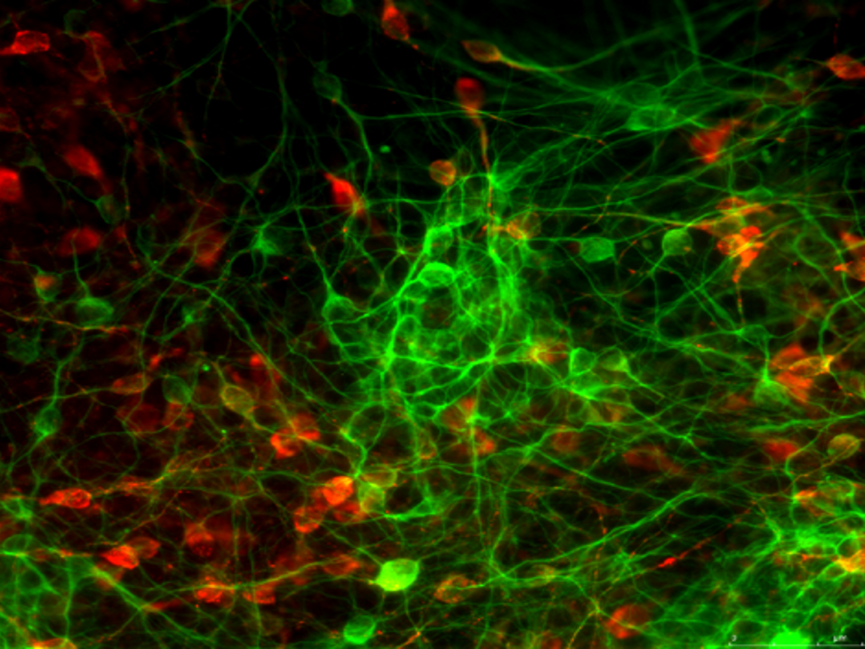

RESPOND
REsearch on Serotonin in the Pathogenesis Of Neurodevelopmental Disorders
Psychiatric diseases, such as attention-deficit hyperactivity disorder (AHDH), autism spectrum disorders (ASD), and schizophrenia, are a growing health problem world-wide. Novel findings have shown that abnormalities in the development of the brain may be involved in the pathogenesis of these diseases and that the neurotransmitter serotonin may play a role in these processes. Therefore, the ERA-NET NEURON funded consortium RESPOND aims at clarifying the role of serotonin in the pathogenesis of ADHD, ASD, and schizophrenia. For this purpose we have generated genetically modified rats with targeted alterations in the brain serotonin system. The brains of these animals are assessed for structural alterations caused by developmental abnormalities. This is combined with a comprehensive behavioral analysis to clarify whether they show symptoms related to ASD, ADHD, or schizophrenia. In parallel, stem cells are isolated from patients and from the genetically altered rats to study developmental processes in cell culture. The integration of these data will provide a comprehensive description of the role of serotonin in ASD, ADHD, and schizophrenia. We expect to establish animal and cellular models for these disorders as basis for the discovery of novel therapies.